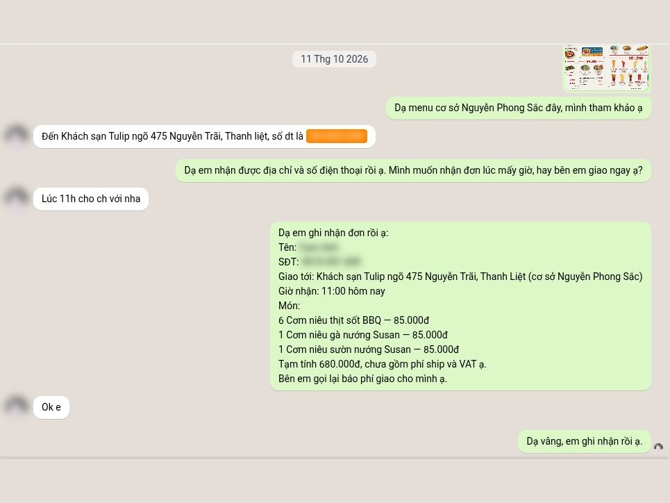
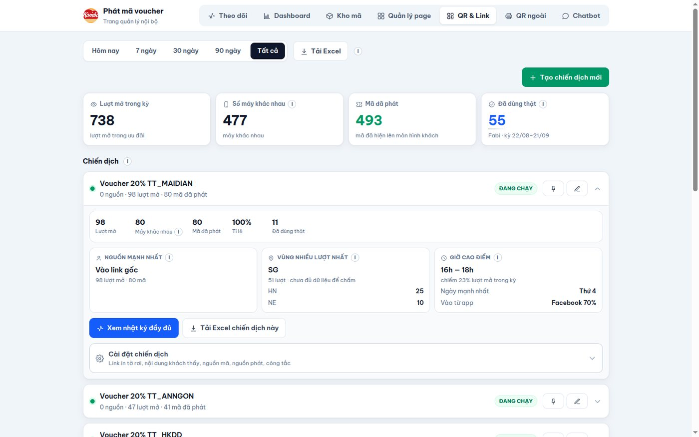
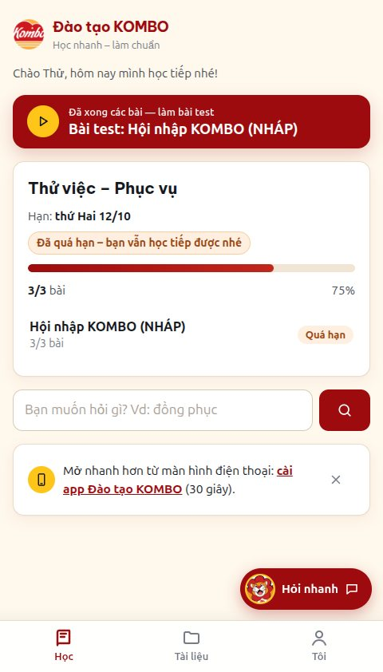
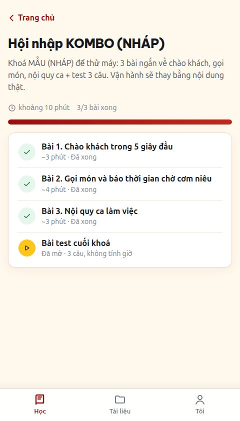
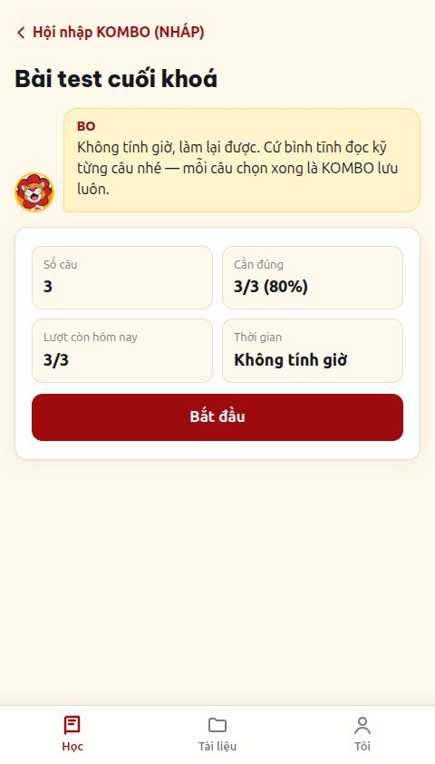
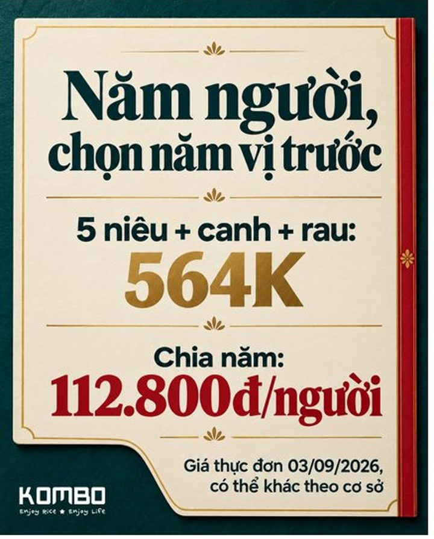
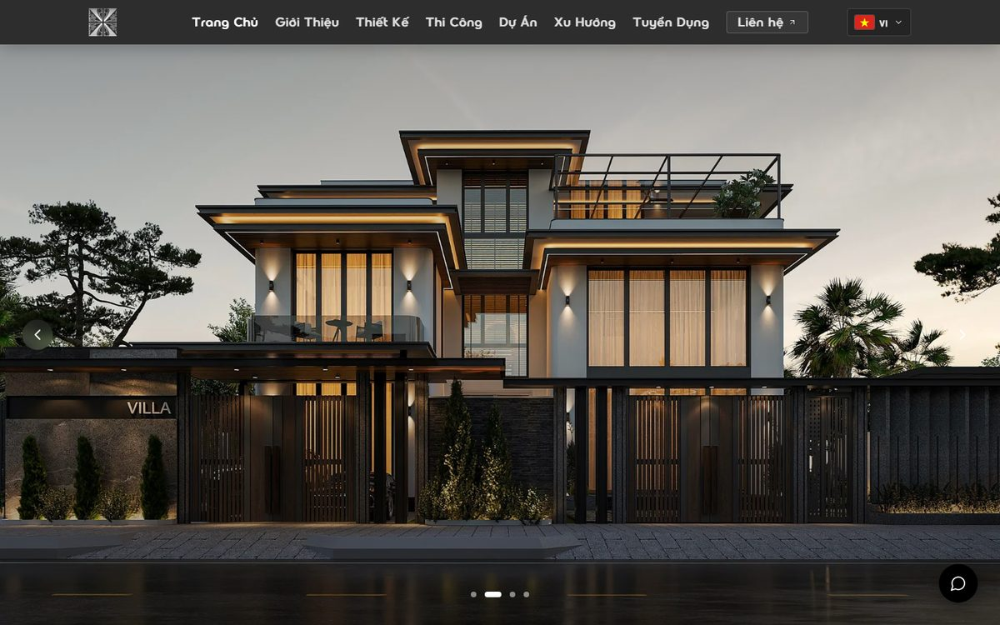
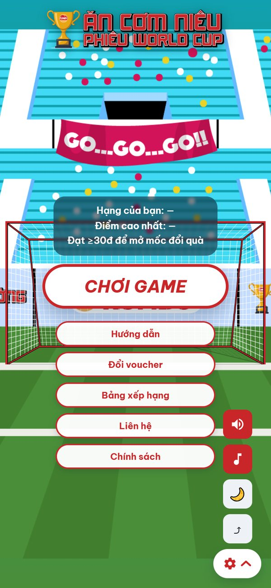
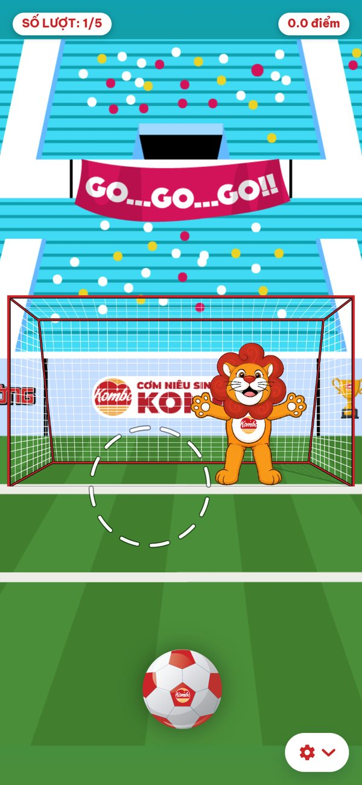
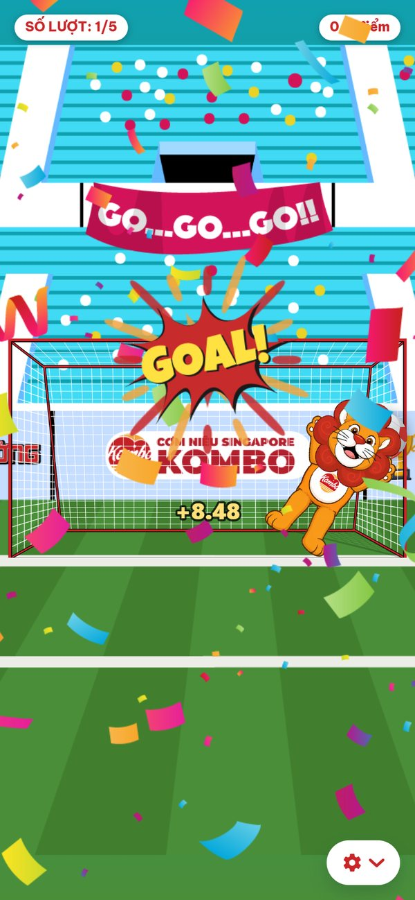

Hội thoại thật · page KOMBO · 11/10
01 / 08
Chatbot tư vấn đa kênh
Vận hành
Trả lời khách trên page KOMBO, page tuyển dụng và X Gallery theo dữ liệu nội bộ hàng trăm SKU lấy từ máy bán hàng, đúng văn phong thương hiệu; nhận đơn và chuyển về tận cơ sở hoặc người phụ trách. Một bot riêng tự trả lời đánh giá Google Maps cho 11 cơ sở.
Ví dụ10/10, một khách hỏi mua suất mang về. Bot hỏi cơ sở, gửi menu Nguyễn Phong Sắc kèm danh sách món đang hết trong ngày lấy từ máy bán hàng. Sáng hôm sau khách đặt ship 8 cơm niêu, bot xin địa chỉ, số điện thoại, giờ nhận, đọc lại đơn tạm tính 680.000đ rồi chuyển về cơ sở lúc 08:37.
8,4 giâyphản hồi trung vị, đo ngày 10/10
593đánh giá Google Maps bot trả lời trong 7 ngày; 90 ngày trước đó chỉ 1
9/11cơ sở nhận đơn thẳng vào máy bán hàng
Luồng và công nghệ
Tin nhắn, ảnhPancake webhookAgent + RAGPOS iPOS/FABi: giá, món hếtĐơn về cơ sở / người phụ trách
Page KOMBOPage tuyển dụngX GalleryGoogle MapsPancakeFABi / iPOS HubTelegram, ZaloNhận diện ảnh (X Gallery)
Admin · QR & link · tất cả các kỳ
02 / 08
Hệ phát voucher và QR, link đa kênh, kèm tracking
Nội bộ
Tự động gửi voucher riêng cho từng khách qua bình luận và tin nhắn Facebook. Tạo QR và link cho Google Maps, menu, KOC, từng cơ sở, kèm tracking và báo cáo cho từng chiến dịch.
Ví dụKhai trương City Land 22/08: bốn kênh phát mã chạy thật cùng ngày, tờ rơi, standee, bài Facebook và link KOC. Khách bình luận "voucher" dưới bài, hệ thống nhắn riêng thẻ "Mã của bạn: FB_CTL01" và trả lời công khai dưới bình luận. Riêng bài đó 25 bình luận, gửi được 21 mã.
564mã đã gửi: 71 qua Facebook, 493 qua QR và link
738lượt mở trang ưu đãi từ 477 máy khác nhau
7chiến dịch đang chạy, 19 mã QR in sẵn
Luồng và công nghệ
Bình luận / tin nhắn / quét QRLọc từ khoá, chống trùngKho mã FABiGửi mã riêngTracking theo điểm chạmBáo cáo chiến dịch
FacebookQR menu, tờ rơiGoogle MapsLink KOCMã FABi3 chế độ: tắt, thử, thật
Màn điện thoại · tài khoản thử


03 / 08
Web tài liệu & đào tạo nội bộ
Nội bộ
Kho quy trình, tài liệu và bài học theo lộ trình từng chức danh, có bài test kiểm tra; nhân viên tra cứu nhanh câu hỏi thường gặp. Nạp nhân sự từ Excel, phân quyền theo vị trí, báo cáo tiến độ hằng ngày qua Zalo cho quản lý.
Ví dụChạy thử 07/10 trọn luồng: nhân viên nhận mã kích hoạt, được giao lộ trình "Thử việc – Phục vụ", học 3 bài, làm bài test cần đúng 80%, nhận huy hiệu. Mọi tài liệu tải về đều in tên người được cấp. Đang chờ vận hành nạp danh sách nhân viên thật.
Luồng và công nghệ
Excel nhân sựMã kích hoạtLộ trình + bài test + tra cứuBáo cáo Zalo
PWA11 cơ sở + VPZalo bot
Ảnh group Telegram
chụp trên điện thoại
04 / 08
Task-bot trên Telegram
Nội bộ
AI hỗ trợ quản lý nhiệm vụ và báo cáo công việc cho từng nhân viên. Tách đầu việc từ tin nhắn, tệp và biên bản họp, kèm khả năng tóm tắt cuộc họp từ ghi âm; nhắc hạn và gửi tổng hợp mỗi sáng.
Ví dụ12/08, một biên bản họp có 13 đầu việc chia cho 4 người được gửi vào group. Bot tách thành 13 việc, gán đúng người phụ trách và hạn, rồi nhắc từng người vào 8h30 sáng. Đếm trên dữ liệu thật ngày 14/08: 4 thành viên, 147 tin nhắn, 59 lần nhờ AI xử lý.
Luồng và công nghệ
Tin nhắn / ghi âm / PDFAI tách việcCây việc 4 tầngNhắc hạn 8h30
TelegramWeb kanbanGemini cho việc dễ, Claude cho việc khó
Ảnh bài do AI dựng
05 / 08
AI làm content tự động cho fanpage KOMBO
Đang dùng
AI tự lập plan tháng, chiến lược, định hướng và viết bài theo giọng thương hiệu, dựng ảnh tương ứng từ kho ảnh món thật. Dựa trên dữ liệu bài cũ, tin nhắn khách và doanh thu. Người chỉ duyệt.
Ví dụĐêm 05/10, hệ thống chạy trọn tháng 11 trong 12,5 giờ: lập plan, viết 30 bài, dựng 30 ảnh từ ảnh món thật, xuất bản trình 34 trang. Bài "bàn hai người lớn, một bé" tự lấy giá 235K theo thực đơn ngày đăng trong POS. Người chỉ đọc và duyệt.
165Kngười theo dõi fanpage
16.849lượt hỏi của khách được đọc
6.772bài đăng trong kho
Luồng và công nghệ
Bài cũ + inbox + doanh thuPlan thángBài viết + ảnhNgười duyệtĐo sau đăng
Claude CodeCodexGPT-ImageGraph API
xpress-design.com
07 / 08
Website & CMS Xpress Design
Đang chạy
Phát triển, quản lý và bảo trì website song ngữ cho công ty thiết kế nội thất. Trang quản trị dự án, xu hướng, tuyển dụng; SEO và cập nhật nội dung sau khi lên.
Ví dụKhách phàn nàn web mở chậm. Đo trên web thật: trang chủ có 23 ảnh, mỗi ảnh 3,4 tới 8,5 MB. Bản nén ảnh lên web ngày 03/09, đo lại bằng Lighthouse: điểm 89 tới 100, LCP 1,1 tới 2,5 giây.
89–100điểm Lighthouse trang chủ, 04/09
1,1–2,5 giâyLCP sau khi nén ảnh
VI / ENCMS dự án, xu hướng, tuyển dụng song ngữ
Công nghệ
Song ngữ VI / ENCMSSEOForm tuyển dụng
Chơi thử · khung điện thoại


08 / 08
Mini game KOMBO
Đang hoàn thiện
Game sút penalty "Ăn cơm niêu, phiêu World Cup" cho chiến dịch: giữ để thu nhỏ vòng ngắm, nhả để sút, sư tử Bo bay người cản, chấm điểm theo vùng, 5 lượt một ván. Đăng nhập Google hoặc chơi ẩn danh, bảng xếp hạng, mốc điểm đổi voucher, hướng dẫn lần đầu, chế độ ngày đêm, chặn bot và gian lận. Còn lại trước khi phát hành: nối mã voucher thật từ POS.
Ví dụMột ván chơi thử 5 lượt: bốn cú vào lưới 8,48 · 9,03 · 8,77 · 8,86 điểm, cú cuối bị Bo cản, tổng 35,14 điểm, qua mốc 30 điểm để mở đổi quà. Người làm game chỉnh vùng cản và điểm từng vùng khung thành bằng công cụ riêng, không sửa code.
Luồng và công nghệ
ChơiKiểm soát tỉ lệ, số lượngVoucherTracking
CanvasViteSupabaseĐăng nhập Google115 test tự động